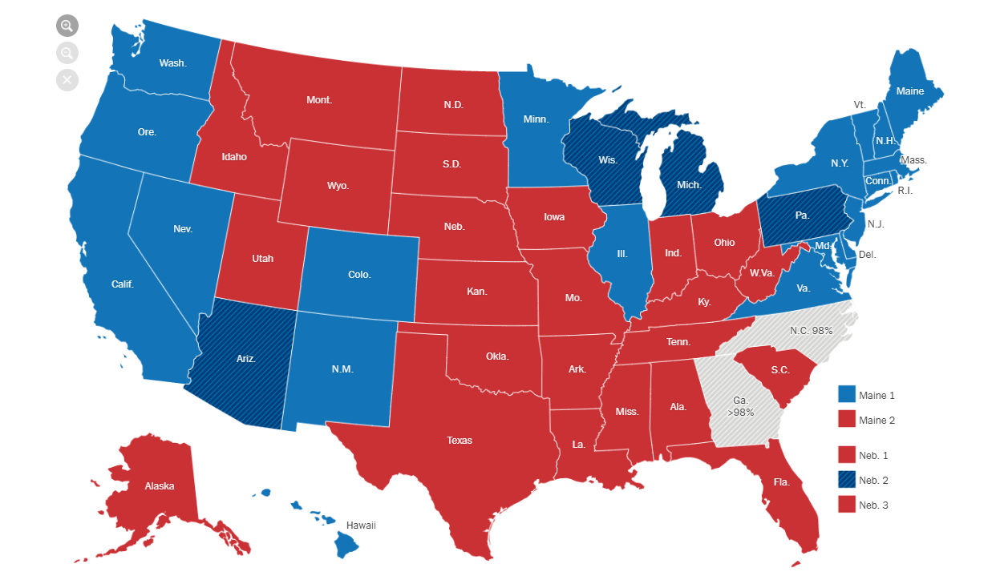
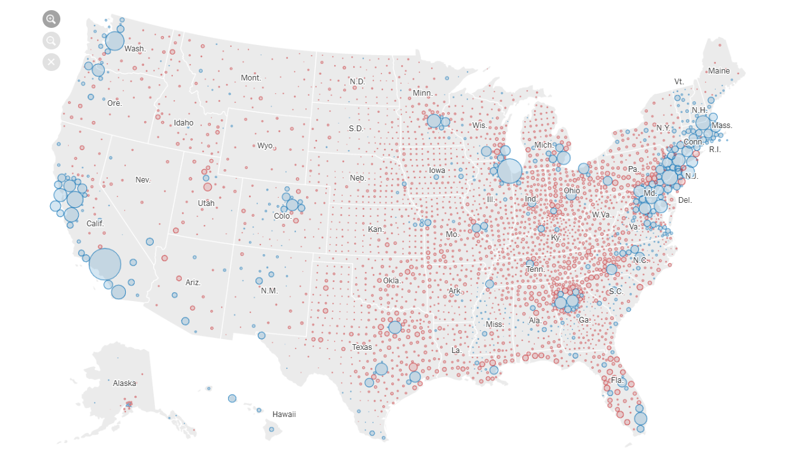

Design e Expansão dos Sentidos
Dados para todos, feitos por uns
Data Visualization, ou visualização de dados, em português, é a técnica usada para comunicar dados ou outros tipos de informação de forma visual, com objetivo de comunicar esses dados de forma clara aos usuários. Desse modo, é possível criar uma maneira mais simples de transformar vários números em algo mais fácil de ser absorvido pelo público geral, que não é especialista no assunto.
Entretanto, essa melhora de compreensão pode ser manipulada ou apenas utilizada para transmitir a ideia que o mensageiro deseja. Como exemplo, vamos olhar o mapa das Eleições dos Estados Unidos do New York Times, de acordo como estava a apuração dos votos na manhã do dia 13 de Novembro:
Mapa: New York Times
Sabendo que a cor vermelha representa estados Republicanos, onde o candidato Donald Trump levou a maioria dos votos, e estados azuis representam Democratas, do presidente-eleito Joe Biden, quem observa assim pode imaginar que os republicanos estão ganhando, ou pelo menos empatados em número de votos. Entretanto, no mesmo site é possível ver o mapa de acordo com a quantidade de votos, e aí a coloração fica bem diferente:
Mapa: New York Times
Perceba como o vermelho, que ao exibir apenas o vencedor em cada cidade dominava todo o centro do país, agora que escolhemos ver o mapa pela diferença dos votos perdeu força. Isso ocorre pois, por mais que os republicanos tenham ganho na maioria das cidades, ganharam por uma margem pequena, enquanto que os democratas, vencedores nos grandes centros, ganharam com uma vantagem muito maior.
O problema é que a escolha de qual mapa exibir envolve muito da escolha editorial do veículo que comunica. Alguém que queira exibir a força do partido republicano irá escolher a primeira imagem, pois ao colorir os estados pela vitória, ignorando a margem, da impressão de que a maioria do país apoia o candidato. Já quem quer mostrar a força dos democratas provavelmente irá buscar um mapa no estilo do segundo, pois ao adicionar a margem de vitória e população, podemos perceber que, de fato, o partido democrata recebeu a maioria dos votos.
O próprio Donald Trump, por exemplo, utilizou desse artifício para simular um maior apoio popular durante o seu processo de impeachment:
— Donald J. Trump (@realDonaldTrump) October 1, 2019
Entretanto, utilizando um mapa da NASA, sobre a densidade populacional nos Estados Unidos, é possível ver que grande parte desse “mar vermelho” que o presidente americano coloca a seu favor na verdade mal possui habitantes:

Mapa: NASA
Isso nos mostra a importância do Data Visualization, tanto como ferramenta para visualizar de forma mais simples a análise de vários dados - no caso, dos votos nos Estados Unidos - quanto como arma para vender uma ideia, a favor ou contra alguma ideia, luta ou político.
Por fim, uma imagem que se tornou popular nos últimos dias foi essa, usada como campanha pelos que são contra o sistema de Colégio Eleitoral, o que mostra mais um caso de como a visualização de dados possui uma importância de uso político. Nela, o mapa que colore as cidades em totalidade pelo resultado de partido vitorioso se transforma no mapa que balanceia o resultado com a densidade populacional, mudando drasticamente a cor predominante:
Data visualization insights:
— Bettina Forget (@BettinaForget) November 5, 2020
Land doesn't vote. People do.#USElection2020 pic.twitter.com/MJWKPftOsx